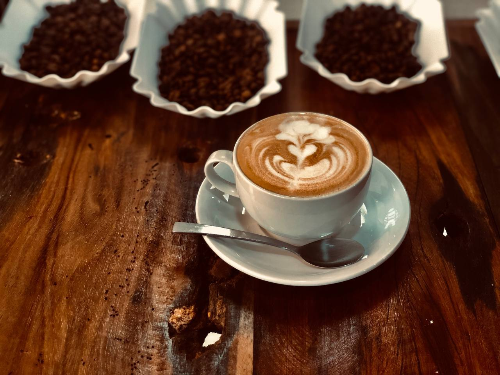
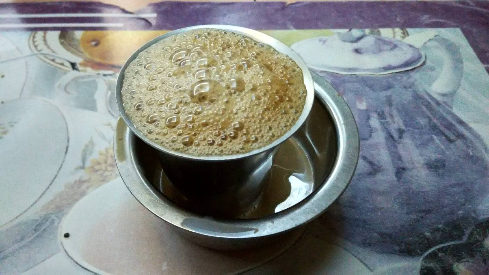
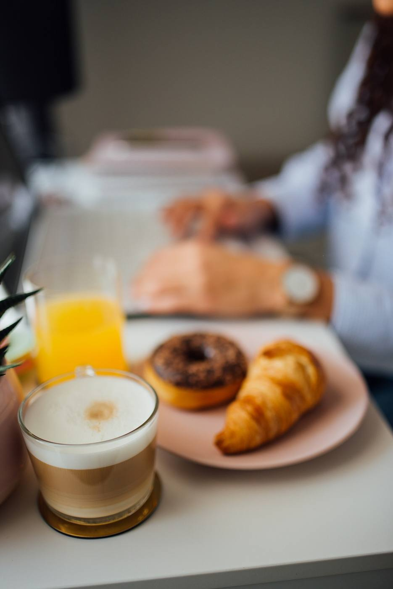
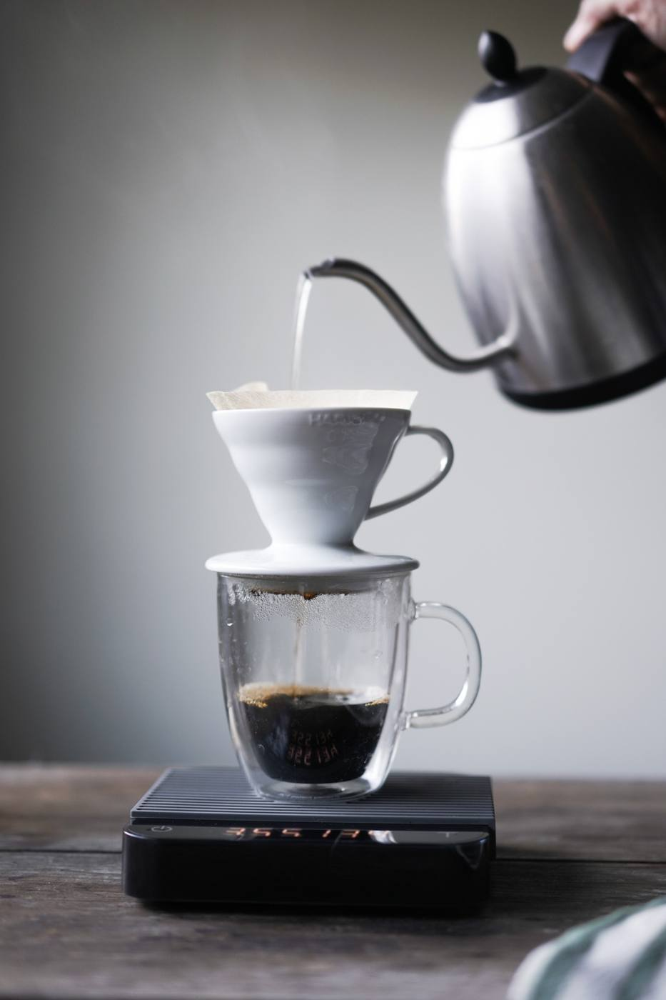
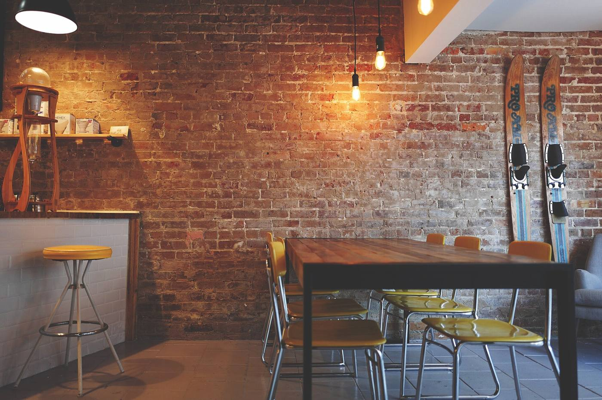
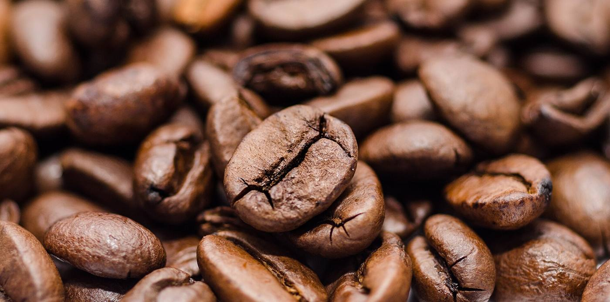

<title>Pagecraft Direction Variants</title>
<link rel="stylesheet" href="https://fonts.googleapis.com/css2?family=Manrope:wght@400;500;600;700;800&family=Fraunces:opsz,wght@9..144,400;9..144,600;9..144,700&family=Inter:wght@400;500;600&family=JetBrains+Mono:wght@400;500&display=swap">
<style>
/* ───────── page shell (the review page around the four directions) ───────── */
:root{
  --bg:#FFFFFF; --bg-2:#F6F5FA; --ink:#1B1B2F; --ink-2:#4A4A66; --muted:#7C7C99; --line:#DCDAE8; --grid:#E7E5F0;
  --indigo:#4338CA; --indigo-soft:#EEF0FF; --coral:#FF6B6B; --mint:#2EC4B6;
  --font:"Manrope",system-ui,-apple-system,"Segoe UI",sans-serif;
  --mono:"JetBrains Mono",ui-monospace,Menlo,Consolas,monospace;
  /* Kaapi Corner's own theme (the user's site — identical in every direction) */
  --k-bg:#F7F1E8; --k-surface:#EFE5D6; --k-ink:#2B1B12; --k-ink-2:#6B5548; --k-accent:#2F5D45; --k-accent-ink:#F7F1E8; --k-line:#E1D3BF;
  --k-head:"Fraunces",Georgia,serif; --k-body:"Inter",system-ui,sans-serif; --k-radius:14px;
}
@media (prefers-color-scheme: dark){ :root:not([data-theme="light"]){ --bg:#15152A; --bg-2:#1C1C33; --ink:#ECEBF6; --ink-2:#C2C1D6; --muted:#8F8FAD; --line:#2E2E4A; --grid:#242440; --indigo:#8F87FF; --indigo-soft:#262650; } }
:root[data-theme="dark"]{ --bg:#15152A; --bg-2:#1C1C33; --ink:#ECEBF6; --ink-2:#C2C1D6; --muted:#8F8FAD; --line:#2E2E4A; --grid:#242440; --indigo:#8F87FF; --indigo-soft:#262650; }
*{box-sizing:border-box}
body{margin:0;background:var(--bg);color:var(--ink);font-family:var(--font);font-size:15px;line-height:1.5;padding-inline:clamp(16px,3vw,40px);padding-block:0 80px}
a{color:var(--indigo)}
.top{display:flex;flex-wrap:wrap;align-items:flex-end;justify-content:space-between;gap:16px;padding-block:28px 18px;border-bottom:1px solid var(--line)}
.top h1{font-size:clamp(22px,2.6vw,30px);font-weight:800;letter-spacing:-.02em;margin:0;text-wrap:balance}
.top p{margin:6px 0 0;color:var(--ink-2);max-width:62ch}
.eyebrow{font-family:var(--mono);font-size:11.5px;letter-spacing:.08em;text-transform:uppercase;color:var(--muted)}
.tabs{display:flex;gap:6px;flex-wrap:wrap;position:sticky;top:0;z-index:20;background:var(--bg);padding-block:12px;border-bottom:1px solid var(--line)}
.tab{appearance:none;border:1px solid var(--line);background:var(--bg-2);color:var(--ink);font:600 14px/1 var(--font);padding:10px 14px;border-radius:999px;cursor:pointer;display:flex;gap:8px;align-items:center}
.tab b{font-family:var(--mono);font-weight:500;font-size:12px;color:var(--muted)}
.tab[aria-selected="true"]{background:var(--ink);color:var(--bg);border-color:var(--ink)}
.tab[aria-selected="true"] b{color:inherit;opacity:.7}
.tab:focus-visible{outline:3px solid var(--mint);outline-offset:2px}
.panel{display:none;padding-top:22px}
.panel.on{display:block}
.panel-head{display:grid;grid-template-columns:1fr auto;gap:12px 32px;align-items:end;margin-bottom:14px}
.panel-head h2{margin:0;font-size:22px;font-weight:800;letter-spacing:-.01em}
.panel-head h2 small{font-family:var(--mono);font-weight:500;font-size:12px;color:var(--muted);margin-left:10px;letter-spacing:.06em}
.panel-head p{margin:4px 0 0;color:var(--ink-2);max-width:78ch}
.hint{font-family:var(--mono);font-size:12px;color:var(--muted);text-align:right}
.hint kbd{border:1px solid var(--line);border-radius:5px;padding:1px 6px;font:inherit}
.below{display:grid;grid-template-columns:minmax(0,1fr) 420px;gap:28px;margin-top:26px;align-items:start}
.notes h3{font-size:13px;margin:0 0 6px;font-family:var(--mono);font-weight:500;letter-spacing:.08em;text-transform:uppercase;color:var(--muted)}
.notes p{margin:0 0 14px;color:var(--ink-2);max-width:66ch}
.notes .tok{display:grid;grid-template-columns:repeat(auto-fill,minmax(150px,1fr));gap:8px;margin:0 0 14px}
.notes .tok div{display:flex;align-items:center;gap:8px;font-family:var(--mono);font-size:11.5px;color:var(--ink-2)}
.notes .tok i{width:18px;height:18px;border-radius:5px;border:1px solid var(--line);flex:none}
@media (max-width:900px){.below{grid-template-columns:1fr}.panel-head{grid-template-columns:1fr}.hint{text-align:left}}

/* ───────── the scaled editor stage ───────── */
.stage-wrap{position:relative;width:100%;overflow:hidden;border-radius:14px;border:1px solid var(--line)}
.stage{width:1280px;height:820px;transform-origin:0 0;position:relative;font-family:var(--font);font-size:13px;line-height:1.4;display:grid;grid-template-rows:52px 1fr;grid-template-columns:236px 1fr 300px;
  --c-bg:#FFFFFF; --c-panel:#FFFFFF; --c-ink:#1B1B2F; --c-ink-2:#4A4A66; --c-muted:#6E6E8C; --c-line:#DCDAE8; --c-desk:#ECEAF3; --c-accent:#4338CA; --c-accent-soft:#EEF0FF; --c-sel:#4338CA; --c-radius:8px; --c-mono:var(--mono)}
.stage *{box-sizing:border-box}
.bar{grid-column:1/-1;display:flex;align-items:center;gap:12px;padding:0 14px;background:var(--c-panel);border-bottom:1px solid var(--c-line);color:var(--c-ink)}
.logo{display:flex;align-items:center;gap:8px;font-weight:800;font-size:14px;letter-spacing:-.01em}
.logo i{width:22px;height:22px;border-radius:6px;background:var(--c-accent);display:grid;place-items:center}
.logo i:before{content:"";width:10px;height:10px;border:2px solid #fff;border-radius:2px;border-right-color:transparent}
.crumb{color:var(--c-muted)}
.crumb b{color:var(--c-ink);font-weight:600}
.pill{font-family:var(--c-mono);font-size:11px;padding:4px 9px;border-radius:999px;border:1px solid var(--c-line);color:var(--c-ink-2);display:inline-flex;gap:6px;align-items:center}
.pill i{width:6px;height:6px;border-radius:50%;background:#2EC4B6}
.bar .sp{flex:1}
.ib{width:30px;height:30px;border-radius:7px;border:1px solid transparent;background:transparent;color:var(--c-ink-2);display:grid;place-items:center;font-size:13px;cursor:pointer}
.ib:hover{background:var(--c-accent-soft);border-color:var(--c-line)}
.seg{display:flex;border:1px solid var(--c-line);border-radius:8px;overflow:hidden}
.seg button{border:0;background:transparent;color:var(--c-ink-2);padding:6px 10px;font:600 12px var(--font);cursor:pointer}
.seg button[aria-pressed="true"]{background:var(--c-accent);color:#fff}
.avatars{display:flex}
.avatars span{width:26px;height:26px;border-radius:50%;border:2px solid var(--c-panel);display:grid;place-items:center;font:700 10px var(--font);color:#fff;margin-left:-6px}
.btn{border:0;border-radius:var(--c-radius);padding:8px 14px;font:700 13px var(--font);cursor:pointer;background:var(--c-accent);color:#fff}
.btn.ghost{background:transparent;color:var(--c-ink-2);border:1px solid var(--c-line)}
.btn:focus-visible,.ib:focus-visible,.seg button:focus-visible{outline:3px solid #2EC4B6;outline-offset:1px}
.pane{background:var(--c-panel);color:var(--c-ink);overflow:hidden;display:flex;flex-direction:column}
.pane.left{border-right:1px solid var(--c-line)}
.pane.right{border-left:1px solid var(--c-line)}
.pane h4{margin:0;padding:12px 14px 8px;font-family:var(--c-mono);font-weight:500;font-size:10.5px;letter-spacing:.1em;text-transform:uppercase;color:var(--c-muted);display:flex;justify-content:space-between;align-items:center}
.layers{list-style:none;margin:0;padding:0 8px}
.layers li{display:flex;align-items:center;gap:8px;padding:8px 8px;border-radius:7px;color:var(--c-ink-2);font-weight:500;cursor:grab}
.layers li .g{color:var(--c-muted);font-size:11px;letter-spacing:-1px}
.layers li .t{width:22px;height:16px;border:1px solid var(--c-line);border-radius:3px;background:linear-gradient(90deg,var(--c-line) 40%,transparent 40%);opacity:.8}
.layers li.sel{background:var(--c-accent-soft);color:var(--c-ink);font-weight:700}
.layers li.sel .t{border-color:var(--c-sel)}
.layers li .n{flex:1}
.layers li .k{font-family:var(--c-mono);font-size:10px;color:var(--c-muted)}
.addsec{margin:10px 14px;display:flex;align-items:center;justify-content:center;gap:8px;padding:9px;border:1px dashed var(--c-line);border-radius:var(--c-radius);background:transparent;color:var(--c-accent);font:700 12px var(--font);cursor:pointer}
.lib{margin:0 14px;display:grid;grid-template-columns:1fr 1fr;gap:8px}
.lib div{border:1px solid var(--c-line);border-radius:7px;padding:8px;font-size:11px;color:var(--c-ink-2);font-weight:600}
.lib div i{display:block;height:26px;border-radius:4px;background:repeating-linear-gradient(90deg,var(--c-line) 0 6px,transparent 6px 10px);margin-bottom:6px;opacity:.7}
.fields{padding:6px 14px 14px;display:flex;flex-direction:column;gap:10px}
.f label{display:block;font-size:11px;font-weight:600;color:var(--c-muted);margin-bottom:4px}
.f .in{border:1px solid var(--c-line);border-radius:7px;padding:7px 9px;font-size:12.5px;color:var(--c-ink);background:var(--c-bg);min-height:32px}
.f .in.ta{min-height:58px;line-height:1.4;color:var(--c-ink-2)}
.f .in.sel{display:flex;justify-content:space-between}
.f .in.sel:after{content:"⌄";color:var(--c-muted)}
.f .img{display:flex;gap:10px;align-items:center}
.f .img img{width:64px;height:44px;object-fit:cover;border-radius:6px}
.f .img small{color:var(--c-muted);font-family:var(--c-mono);font-size:10px;display:block}
.row2{display:grid;grid-template-columns:1fr 1fr;gap:8px}
.theme{padding:0 14px 14px}
.sw{display:flex;gap:8px;flex-wrap:wrap}
.sw button{width:40px;height:28px;border-radius:7px;border:2px solid transparent;cursor:pointer;padding:0;display:grid;grid-template-columns:1fr 1fr;overflow:hidden}
.sw button span{display:block}
.sw button[aria-pressed="true"]{border-color:var(--c-sel);box-shadow:0 0 0 2px var(--c-panel) inset}
.sw button:focus-visible{outline:3px solid #2EC4B6}
.fp{display:flex;gap:6px;flex-wrap:wrap}
.fp button{border:1px solid var(--c-line);background:transparent;color:var(--c-ink-2);border-radius:6px;padding:5px 8px;font-size:11px;cursor:pointer}
.fp button[aria-pressed="true"]{border-color:var(--c-sel);color:var(--c-ink);font-weight:700}
.fp button b{font-family:var(--k-head);font-weight:600}

.canvas{background:var(--c-desk);overflow:auto;padding:26px 28px;position:relative}
.frame{position:relative;width:100%;max-width:724px;margin:0 auto;border-radius:6px;box-shadow:0 1px 2px rgba(20,20,40,.08),0 12px 40px -18px rgba(20,20,40,.35);overflow:hidden;background:var(--k-bg)}
.frame .page{container-type:inline-size}
.stamp,.success{position:absolute;inset:0;display:none}
.sec{position:relative}
.sec.selected{outline:2px solid var(--c-sel);outline-offset:-2px}
.sec.selected:before{content:attr(data-name);position:absolute;top:0;left:0;z-index:3;background:var(--c-sel);color:#fff;font:700 10px/1 var(--font);letter-spacing:.06em;text-transform:uppercase;padding:5px 8px;border-radius:0 0 6px 0}
.sec:hover:not(.selected){outline:1px solid color-mix(in srgb,var(--c-sel) 55%,transparent);outline-offset:-1px}
.caret{display:inline-block;width:2px;height:.9em;background:var(--c-sel);vertical-align:-.1em;margin-left:1px;animation:blink 1s steps(1) infinite}
@keyframes blink{50%{opacity:0}}

/* ───────── Kaapi Corner — the user's site (container-query responsive) ───────── */
.page{background:var(--k-bg);color:var(--k-ink);font-family:var(--k-body);font-size:15px;line-height:1.55}
.page *{box-sizing:border-box}
.page h1,.page h2,.page h3{font-family:var(--k-head);font-weight:600;letter-spacing:-.01em;margin:0;text-wrap:balance}
.page p{margin:0}
.page img{display:block;max-width:100%}
.k-nav{display:flex;align-items:center;justify-content:space-between;padding:16px 28px;border-bottom:1px solid var(--k-line)}
.k-nav .brand{font-family:var(--k-head);font-weight:700;font-size:18px}
.k-nav ul{display:none;list-style:none;margin:0;padding:0;gap:22px;font-size:13.5px;color:var(--k-ink-2)}
.k-nav .k-btn{font-size:12.5px;padding:8px 12px}
.k-btn{display:inline-block;background:var(--k-accent);color:var(--k-accent-ink);border-radius:calc(var(--k-radius) * .6);padding:11px 18px;font-weight:600;font-size:14px;text-decoration:none}
.k-btn.o{background:transparent;color:var(--k-ink);border:1px solid var(--k-line)}
.k-hero{display:grid;gap:22px;padding:34px 28px}
.k-hero .eyebrow{font-family:var(--k-body);font-size:11.5px;letter-spacing:.12em;text-transform:uppercase;color:var(--k-accent);font-weight:600}
.k-hero h1{font-size:34px;line-height:1.08;margin:10px 0 12px}
.k-hero p.lead{color:var(--k-ink-2);max-width:44ch;font-size:15px}
.k-hero .ctas{display:flex;gap:10px;margin-top:18px;flex-wrap:wrap}
.k-hero img{width:100%;aspect-ratio:4/3;object-fit:cover;border-radius:var(--k-radius)}
.k-sec{padding:34px 28px}
.k-sec .kicker{font-size:11.5px;letter-spacing:.12em;text-transform:uppercase;color:var(--k-accent);font-weight:600;margin-bottom:8px}
.k-sec h2{font-size:26px;margin-bottom:18px}
.k-menu{display:grid;gap:14px}
.k-menu article{background:var(--k-surface);border-radius:var(--k-radius);overflow:hidden}
.k-menu img{width:100%;aspect-ratio:16/10;object-fit:cover}
.k-menu .b{padding:14px 16px}
.k-menu h3{font-size:17px;display:flex;justify-content:space-between;gap:10px}
.k-menu h3 span{font-family:var(--k-body);font-weight:600;font-size:14px;color:var(--k-accent);font-variant-numeric:tabular-nums}
.k-menu p{color:var(--k-ink-2);font-size:13.5px;margin-top:4px}
.k-gal{display:grid;grid-template-columns:1fr 1fr;gap:10px}
.k-gal img{width:100%;aspect-ratio:1;object-fit:cover;border-radius:calc(var(--k-radius) * .7)}
.k-gal img:first-child{grid-column:1/-1;aspect-ratio:16/9}
.k-quotes{display:grid;gap:12px}
.k-quotes blockquote{margin:0;background:var(--k-surface);border-radius:var(--k-radius);padding:18px}
.k-quotes q{font-family:var(--k-head);font-size:17px;line-height:1.35;quotes:"“" "”"}
.k-quotes cite{display:block;margin-top:10px;font-style:normal;font-size:12.5px;color:var(--k-ink-2)}
.k-quotes .stars{color:var(--k-accent);letter-spacing:2px;font-size:12px;margin-bottom:6px}
.k-visit{display:grid;gap:18px}
.k-visit dl{margin:0;display:grid;grid-template-columns:auto 1fr;gap:8px 16px;font-size:14px}
.k-visit dt{color:var(--k-ink-2)}
.k-visit dd{margin:0;font-weight:500}
.k-map{border-radius:var(--k-radius);min-height:180px;background:
  linear-gradient(var(--k-line) 1px,transparent 1px) 0 0/28px 28px,
  linear-gradient(90deg,var(--k-line) 1px,transparent 1px) 0 0/28px 28px,var(--k-surface);position:relative}
.k-map:before{content:"";position:absolute;left:52%;top:46%;width:18px;height:18px;border-radius:50% 50% 50% 0;transform:rotate(-45deg);background:var(--k-accent);box-shadow:0 0 0 6px color-mix(in srgb,var(--k-accent) 20%,transparent)}
.k-map:after{content:"12th Main · Indiranagar";position:absolute;left:52%;top:56%;transform:translateX(-50%);font-size:11px;background:var(--k-bg);padding:3px 8px;border-radius:6px;white-space:nowrap}
.k-foot{padding:22px 28px;border-top:1px solid var(--k-line);font-size:12.5px;color:var(--k-ink-2);display:flex;justify-content:space-between;gap:12px;flex-wrap:wrap}
.k-badge{position:absolute;right:12px;bottom:12px;background:#1B1B2F;color:#fff;font:600 10.5px var(--font);padding:6px 9px;border-radius:999px;display:flex;align-items:center;gap:6px;box-shadow:0 4px 14px rgba(0,0,0,.25)}
.k-badge i{width:10px;height:10px;border-radius:3px;background:#4338CA;display:inline-block}
@container (min-width:600px){
  .k-nav ul{display:flex}
  .k-hero{grid-template-columns:1.05fr 1fr;align-items:center;padding:48px 40px}
  .k-hero h1{font-size:44px}
  .k-sec{padding:44px 40px}
  .k-menu{grid-template-columns:repeat(3,1fr)}
  .k-gal{grid-template-columns:2fr 1fr 1fr}
  .k-gal img:first-child{grid-column:auto;grid-row:1/3;aspect-ratio:auto;height:100%}
  .k-quotes{grid-template-columns:repeat(3,1fr)}
  .k-visit{grid-template-columns:1fr 1.2fr;align-items:start}
  .k-nav,.k-foot{padding-inline:40px}
}
/* alternative palettes for the theme-ripple demo */
.page[data-palette="espresso"]{}
.page[data-palette="monsoon"]{--k-bg:#F3F6F5;--k-surface:#E4ECE9;--k-ink:#12302B;--k-ink-2:#4E6A64;--k-accent:#0E7C66;--k-accent-ink:#F3F6F5;--k-line:#CFDCD8}
.page[data-palette="saffron"]{--k-bg:#FFF8EE;--k-surface:#FBEBD2;--k-ink:#3A2410;--k-ink-2:#7A5A3A;--k-accent:#C2410C;--k-accent-ink:#FFF8EE;--k-line:#EED9BC}
.page[data-palette="midnight"]{--k-bg:#17181F;--k-surface:#22242E;--k-ink:#F2EEE6;--k-ink-2:#B4AFA4;--k-accent:#E2B96B;--k-accent-ink:#17181F;--k-line:#33363F}
.page[data-fonts="fraunces-inter"]{}
.page[data-fonts="manrope-inter"]{--k-head:"Manrope",system-ui,sans-serif}
.page[data-fonts="mono-inter"]{--k-head:"JetBrains Mono",monospace}

/* ───────── phone ───────── */
.phone{width:390px;max-width:100%;margin:0 auto;border-radius:44px;border:10px solid #17172A;background:#17172A;box-shadow:0 30px 60px -30px rgba(0,0,0,.5);overflow:hidden;position:relative}
.phone .screen{height:780px;overflow:auto;background:var(--k-bg);position:relative;border-radius:34px}
.phone .screen::-webkit-scrollbar{width:0}
.phone .page{container-type:inline-size}
.phone .notch{position:absolute;top:10px;left:50%;transform:translateX(-50%);width:110px;height:28px;background:#17172A;border-radius:999px;z-index:5}
.phone .url{position:sticky;top:0;z-index:4;background:rgba(247,241,232,.92);backdrop-filter:blur(8px);font:500 11.5px var(--mono);color:var(--k-ink-2);padding:44px 14px 8px;text-align:center;border-bottom:1px solid var(--k-line)}
.phone-cap{font-family:var(--mono);font-size:11.5px;color:var(--muted);text-align:center;margin-top:10px}

/* ───────── A · Studio (dark chrome) ───────── */
.stage.dir-a{--c-bg:#22223A;--c-panel:#1B1B2F;--c-ink:#ECEBF6;--c-ink-2:#C2C1D6;--c-muted:#8B8BAB;--c-line:#2F2F4C;--c-desk:#3A3A57;--c-accent:#7C74FF;--c-accent-soft:#2A2A4D;--c-sel:#2EC4B6;--c-radius:8px}
.stage.dir-a .layers li.sel{background:#2A2A4D}
.stage.dir-a .frame{box-shadow:0 30px 60px -30px rgba(0,0,0,.7)}
.cursor{position:absolute;z-index:6;pointer-events:none;left:0;top:0;transform:translate(-9999px,-9999px);transition:transform .9s cubic-bezier(.3,.7,.3,1)}
.cursor svg{display:block;filter:drop-shadow(0 2px 3px rgba(0,0,0,.35))}
.cursor .tag{position:absolute;left:14px;top:14px;font:700 10.5px var(--font);color:#fff;padding:3px 7px;border-radius:999px;white-space:nowrap}
.trail{position:absolute;z-index:5;width:8px;height:8px;border-radius:50%;pointer-events:none;animation:trail .7s ease-out forwards}
@keyframes trail{from{opacity:.9;transform:scale(1)}to{opacity:0;transform:scale(.2)}}
.sec.remote{outline:2px solid var(--peer);outline-offset:-2px;animation:breathe 1.6s ease-in-out infinite}
.sec.remote:after{content:attr(data-peer);position:absolute;top:0;right:0;z-index:3;background:var(--peer);color:#fff;font:700 10px/1 var(--font);letter-spacing:.06em;text-transform:uppercase;padding:5px 8px;border-radius:0 0 0 6px}
@keyframes breathe{0%,100%{outline-color:var(--peer)}50%{outline-color:color-mix(in srgb,var(--peer) 40%,transparent)}}
.rcaret{display:inline-block;width:2px;height:.9em;background:var(--peer);vertical-align:-.1em;position:relative}
.rcaret:after{content:attr(data-peer);position:absolute;left:-2px;top:-14px;font:700 8.5px var(--font);color:#fff;background:var(--peer);padding:1px 4px;border-radius:3px;white-space:nowrap}

/* ───────── B · Paper desk ───────── */
.stage.dir-b{--c-bg:#FBFAF6;--c-panel:#F6F4EE;--c-ink:#1B1B2F;--c-ink-2:#4A4A66;--c-muted:#6F6F84;--c-line:#E3E0D6;--c-desk:#EDEAE0;--c-accent:#1B1B2F;--c-accent-soft:#ECEAE0;--c-sel:#4338CA;--c-radius:4px}
.stage.dir-b .canvas{background-image:linear-gradient(var(--grid) 1px,transparent 1px),linear-gradient(90deg,var(--grid) 1px,transparent 1px);background-size:24px 24px;background-color:#EDEAE0}
.stage.dir-b .btn{background:#1B1B2F}
.stage.dir-b .seg button[aria-pressed="true"]{background:#1B1B2F}
.stage.dir-b .frame{border-radius:2px;box-shadow:0 1px 0 rgba(0,0,0,.05),0 20px 30px -20px rgba(27,27,47,.35);transition:transform .35s cubic-bezier(.2,.8,.2,1),box-shadow .35s}
.stage.dir-b .frame.lift{transform:translateY(-8px);box-shadow:0 1px 0 rgba(0,0,0,.05),0 40px 50px -24px rgba(27,27,47,.45)}
.stage.dir-b .frame.out .page{transform:translateY(118%);transition:transform 1.1s cubic-bezier(.5,0,.8,.4) .55s}
.stamp{display:block;pointer-events:none;z-index:8}
.stamp span{position:absolute;left:50%;top:38%;transform:translate(-50%,-50%) rotate(-8deg) scale(1.6);opacity:0;font:800 64px/1 var(--font);letter-spacing:.06em;color:#E63946;border:6px solid #E63946;padding:10px 22px;border-radius:12px;mix-blend-mode:multiply}
.frame.stamped .stamp span{animation:stamp .5s cubic-bezier(.2,1.4,.3,1) forwards}
@keyframes stamp{to{opacity:.92;transform:translate(-50%,-50%) rotate(-8deg) scale(1)}}
.success{z-index:1;display:grid;place-items:center;background:var(--c-desk)}
.success .card{background:#fff;border:1px solid var(--c-line);border-radius:10px;padding:26px 28px;width:380px;text-align:center;box-shadow:0 20px 40px -24px rgba(27,27,47,.35);opacity:0;transform:translateY(12px)}
.frame.out .success .card{animation:rise .6s ease-out 1.4s forwards}
@keyframes rise{to{opacity:1;transform:none}}
.success h3{margin:0 0 6px;font-size:20px;font-weight:800}
.success p{margin:0 0 14px;color:var(--c-ink-2);font-size:13px}
.success .url{font-family:var(--mono);font-size:12.5px;background:#F6F4EE;border:1px solid var(--c-line);border-radius:6px;padding:9px 12px;color:#1B1B2F;display:flex;justify-content:space-between;gap:10px;align-items:center}
.success .url b{font-weight:500;color:#4338CA}

/* ───────── C · Blueprint ───────── */
.stage.dir-c{--c-bg:#FFFFFF;--c-panel:#FFFFFF;--c-ink:#1B1B2F;--c-ink-2:#4A4A66;--c-muted:#6E6E8C;--c-line:#DCDAE8;--c-desk:#F4F4FA;--c-accent:#4338CA;--c-accent-soft:#EEF0FF;--c-sel:#4338CA;--c-radius:3px;font-family:var(--mono)}
.stage.dir-c .btn,.stage.dir-c .seg button,.stage.dir-c .layers li,.stage.dir-c .addsec,.stage.dir-c .f label{font-family:var(--mono);font-weight:500}
.stage.dir-c .canvas{background-image:linear-gradient(#E7E5F0 1px,transparent 1px),linear-gradient(90deg,#E7E5F0 1px,transparent 1px),linear-gradient(#DCDAE8 1px,transparent 1px),linear-gradient(90deg,#DCDAE8 1px,transparent 1px);background-size:12px 12px,12px 12px,96px 96px,96px 96px;background-color:#F7F7FC}
.stage.dir-c .frame{border-radius:0;box-shadow:none;outline:1px solid #C9C6DE}
.stage.dir-c .sec.selected{outline:2px dashed var(--c-sel)}
.stage.dir-c .sec.selected:before{border-radius:0;font-family:var(--mono);font-weight:500}
.stage.dir-c .layers li.sel{background:var(--c-accent-soft)}
.stage.dir-c .pane h4{color:var(--c-accent)}
.stage.dir-c .layers li .k{display:inline}
.stage.dir-c .frame:before,.stage.dir-c .frame:after{content:"";position:absolute;z-index:4;width:12px;height:12px;border:1px solid var(--c-sel);pointer-events:none}
.stage.dir-c .frame:before{left:-1px;top:-1px;border-right:0;border-bottom:0}
.stage.dir-c .frame:after{right:-1px;bottom:-1px;border-left:0;border-top:0}
.sec.drawing .content{opacity:0;transition:opacity .45s ease .55s}
.sec.drawing.filled .content{opacity:1}
.bp{position:absolute;inset:0;z-index:5;pointer-events:none}
.bp rect{fill:none;stroke:var(--c-sel);stroke-width:1.5;stroke-dasharray:1;stroke-dashoffset:1;vector-effect:non-scaling-stroke}
.sec.drawing .bp rect{animation:draw .55s ease-out forwards}
.sec.drawing.filled .bp rect{animation:fade .4s ease forwards}
@keyframes draw{to{stroke-dashoffset:0}}
@keyframes fade{to{opacity:0}}
.sec.drawing .bp text{font:500 9px var(--mono);fill:var(--c-sel);letter-spacing:.08em}

/* ───────── D · Glass ───────── */
.stage.dir-d{--c-bg:rgba(255,255,255,.55);--c-panel:rgba(255,255,255,.62);--c-ink:#1B1B2F;--c-ink-2:#3E3E5C;--c-muted:#6F6F92;--c-line:rgba(27,27,47,.12);--c-desk:transparent;--c-accent:#4338CA;--c-accent-soft:rgba(67,56,202,.12);--c-sel:#FF6B6B;--c-radius:12px;
  background:radial-gradient(1200px 600px at 10% 0%,#DCD8FF 0%,transparent 60%),radial-gradient(900px 700px at 95% 100%,#BFF2EC 0%,transparent 60%),linear-gradient(160deg,#EEF0FF,#F6F5FA 50%,#E9FBF8)}
.stage.dir-d .bar,.stage.dir-d .pane{backdrop-filter:blur(18px) saturate(1.3);-webkit-backdrop-filter:blur(18px) saturate(1.3)}
.stage.dir-d .pane.left{border-right-color:rgba(255,255,255,.7)}
.stage.dir-d .pane.right{border-left-color:rgba(255,255,255,.7)}
.stage.dir-d .bar{border-bottom-color:rgba(255,255,255,.7)}
.stage.dir-d .frame{border-radius:14px;box-shadow:0 30px 60px -28px rgba(67,56,202,.45),0 0 0 1px rgba(255,255,255,.8)}
.stage.dir-d .btn{box-shadow:0 8px 20px -10px rgba(67,56,202,.7)}
.stage.dir-d .layers li.sel{background:rgba(255,255,255,.75)}
.ripple{position:absolute;inset:0;z-index:4;container-type:inline-size;transition:clip-path .75s cubic-bezier(.2,.7,.2,1)}

@media (prefers-reduced-motion: reduce){
  .cursor{transition:none}.trail{display:none}.sec.remote{animation:none}
  .stage.dir-b .frame.out .page{transition:none}.frame.stamped .stamp span{animation-duration:.01s}.frame.out .success .card{animation-delay:0s;animation-duration:.01s}
  .sec.drawing .content{transition:none;opacity:1}.sec.drawing .bp{display:none}
  .ripple{transition:none}.caret{animation:none}
}
</style>

<header class="top">
  <div>
    <div class="eyebrow">Pagecraft · step 4 · direction variants · round 1</div>
    <h1>Four ways the editor can hold the user's site</h1>
    <p>Same product, same <em>Kaapi Corner</em> café on the canvas, same café theme on the phone. Only the editor chrome and its motion moment change between tabs. Everything is live — try the control named in each tab.</p>
  </div>
  <div class="hint">Reply with a letter · <kbd>1</kbd>–<kbd>4</kbd> switch tabs</div>
</header>

<nav class="tabs" role="tablist" aria-label="Directions">
  <button class="tab" role="tab" aria-selected="true" data-p="a"><b>A</b> Studio</button>
  <button class="tab" role="tab" aria-selected="false" data-p="b"><b>B</b> Paper desk</button>
  <button class="tab" role="tab" aria-selected="false" data-p="c"><b>C</b> Blueprint</button>
  <button class="tab" role="tab" aria-selected="false" data-p="d"><b>D</b> Glass</button>
</nav>

<!-- ═══════════════ A · Studio ═══════════════ -->
<section class="panel on" id="p-a" role="tabpanel">
  <div class="panel-head">
    <div><h2>A · Studio <small>DARK CHROME · COMET CURSORS</small></h2>
      <p>Figma's move: the tool is dark and quiet so the site is the one bright object on the desk. The collaboration story lives here — Ananya (the demo collaborator) is editing with you: her cursor trails her colour, her selected section breathes, her caret shows where she types.</p></div>
    <div class="hint">Watch: Ananya edits the eyebrow every few seconds</div>
  </div>
  <div class="stage-wrap"><div class="stage dir-a" data-dir="a"></div></div>
  <div class="below">
    <div class="notes">
      <h3>Trade-off</h3>
      <p>Dark chrome makes a light café site pop and lets coloured cursors and outlines read instantly — the two-tab demo looks the way people expect a "Figma-type" tool to look. It is also the most expected direction of the four; the identity comes from the collaboration motion, not the chrome. Published sites are unaffected (they use the user's theme).</p>
      <h3>Motion signature</h3>
      <p><b>Comet cursors</b> — a remote cursor leaves a short trail in its colour (8 px dots, 700 ms fade); the section it selects gets a breathing outline; when it types, a labelled caret appears in the text. In v1 (single user) the same chrome shows the section draw-in from C as a fallback moment. Reduced motion: static cursor, no trail.</p>
      <h3>Chrome tokens</h3>
      <div class="tok"><div><i style="background:#1B1B2F"></i>panel 1B1B2F</div><div><i style="background:#3A3A57"></i>desk 3A3A57</div><div><i style="background:#7C74FF"></i>accent 7C74FF</div><div><i style="background:#2EC4B6"></i>selection 2EC4B6</div><div><i style="background:#ECEBF6"></i>ink ECEBF6</div></div>
    </div>
    <div><div class="phone" data-phone></div><div class="phone-cap">S9 · kaapi-corner.pagecraft.virajdomadia.com · 390 px</div></div>
  </div>
</section>

<!-- ═══════════════ B · Paper desk ═══════════════ -->
<section class="panel" id="p-b" role="tabpanel">
  <div class="panel-head">
    <div><h2>B · Paper desk <small>WARM CHROME · PRESS</small></h2>
      <p>The editor is a layout table: warm off-white chrome, hairline borders, ink buttons, the brand grid faintly under the page. Calm and print-like, so the site reads as a sheet you are pasting up — and Publish is the moment it goes to press.</p></div>
    <div class="hint">Try: press <b>Publish</b> in the top bar</div>
  </div>
  <div class="stage-wrap"><div class="stage dir-b" data-dir="b"></div></div>
  <div class="below">
    <div class="notes">
      <h3>Trade-off</h3>
      <p>Warmest and most distinctive of the four, and the closest to the existing landing (white, ink, indigo). Costs: less contrast between chrome and a light site, so selection needs the indigo outline to work harder; the paper feel suits small businesses more than SaaS founders.</p>
      <h3>Motion signature</h3>
      <p><b>Press</b> — on Publish the page lifts off the desk, a red LIVE stamp hits (scale 1.6 → 1, −8°, 500 ms overshoot), then the sheet slides out of the frame like a print (1.1 s) and the success card with the URL rises in its place. Reduced motion: cross-fade to the card.</p>
      <h3>Chrome tokens</h3>
      <div class="tok"><div><i style="background:#F6F4EE"></i>panel F6F4EE</div><div><i style="background:#EDEAE0"></i>desk EDEAE0</div><div><i style="background:#1B1B2F"></i>action 1B1B2F</div><div><i style="background:#4338CA"></i>selection 4338CA</div><div><i style="background:#E63946"></i>stamp E63946</div></div>
    </div>
    <div><div class="phone" data-phone></div><div class="phone-cap">S9 · kaapi-corner.pagecraft.virajdomadia.com · 390 px</div></div>
  </div>
</section>

<!-- ═══════════════ C · Blueprint ═══════════════ -->
<section class="panel" id="p-c" role="tabpanel">
  <div class="panel-head">
    <div><h2>C · Blueprint <small>GRID CHROME · DRAW-IN</small></h2>
      <p>An engineering drawing of a website: the brand grid everywhere, dashed indigo guides, monospace labels with section ids. The chrome says "this is a precise instrument" — and adding a section shows the drawing being made.</p></div>
    <div class="hint">Try: <b>+ Add section</b> in the layers pane</div>
  </div>
  <div class="stage-wrap"><div class="stage dir-c" data-dir="c"></div></div>
  <div class="below">
    <div class="notes">
      <h3>Trade-off</h3>
      <p>The most "frontend-engineer" of the four and the strongest differentiator against Framer/Webflow. Risk: monospace chrome and grids can feel cold to a salon owner; the published site still looks like their café, so the risk stays inside the editor. Pairs naturally with dashed selection and section ids in the layers list.</p>
      <h3>Motion signature</h3>
      <p><b>Blueprint draw-in</b> — a new section arrives as a wireframe: its layout boxes trace themselves in indigo (stroke-dashoffset, 550 ms, staggered 60 ms) with tiny labels, then the real content fades into the boxes and the lines dissolve. Reorders slide with the same trace. Reduced motion: 150 ms fade.</p>
      <h3>Chrome tokens</h3>
      <div class="tok"><div><i style="background:#FFFFFF"></i>panel FFFFFF</div><div><i style="background:#F7F7FC"></i>desk F7F7FC</div><div><i style="background:#4338CA"></i>guides 4338CA</div><div><i style="background:#E7E5F0"></i>grid E7E5F0</div><div><i style="background:#1B1B2F"></i>ink 1B1B2F</div></div>
    </div>
    <div><div class="phone" data-phone></div><div class="phone-cap">S9 · kaapi-corner.pagecraft.virajdomadia.com · 390 px</div></div>
  </div>
</section>

<!-- ═══════════════ D · Glass ═══════════════ -->
<section class="panel" id="p-d" role="tabpanel">
  <div class="panel-head">
    <div><h2>D · Glass <small>TRANSLUCENT CHROME · THEME RIPPLE</small></h2>
      <p>Modern-app look: panels are frosted glass over a soft indigo → mint wash; the site floats on it with a coloured shadow. Loudest of the four, and the one where the theme panel is the hero — pick a palette and watch the wave.</p></div>
    <div class="hint">Try: the palette swatches in the inspector</div>
  </div>
  <div class="stage-wrap"><div class="stage dir-d" data-dir="d"></div></div>
  <div class="below">
    <div class="notes">
      <h3>Trade-off</h3>
      <p>Most eye-catching in a screenshot and the friendliest to non-technical creators. Costs: blur and colour washes compete with the user's own palette, and glass is the current default look of AI-generated dashboards — it will date fastest. Heaviest on GPU (backdrop-filter) in a page that already renders a whole site.</p>
      <h3>Motion signature</h3>
      <p><b>Theme ripple</b> — picking a palette sends a circle out from the swatch across the canvas (clip-path circle, 750 ms); sections recolour as the wave passes; font pairs cross-fade. Reduced motion: instant recolour.</p>
      <h3>Chrome tokens</h3>
      <div class="tok"><div><i style="background:rgba(255,255,255,.65);border-color:#bbb"></i>panel white 62 %</div><div><i style="background:#DCD8FF"></i>wash DCD8FF</div><div><i style="background:#BFF2EC"></i>wash BFF2EC</div><div><i style="background:#4338CA"></i>accent 4338CA</div><div><i style="background:#FF6B6B"></i>selection FF6B6B</div></div>
    </div>
    <div><div class="phone" data-phone></div><div class="phone-cap">S9 · kaapi-corner.pagecraft.virajdomadia.com · 390 px</div></div>
  </div>
</section>

<!-- ═══════════════ templates ═══════════════ -->
<template id="t-site">
  <div class="page" data-palette="espresso" data-fonts="fraunces-inter">
    <header class="sec k-nav" data-name="Nav" data-id="s_nav">
      <div class="brand">Kaapi Corner</div>
      <ul><li>Menu</li><li>Our story</li><li>Visit</li></ul>
      <a class="k-btn" href="#">Order on WhatsApp</a>
    </header>
    <section class="sec k-hero selected" data-name="Hero · Split" data-id="s_hero">
      <div>
        <div class="eyebrow" data-field="eyebrow">Indiranagar · since 2019</div>
        <h1 data-field="headline">Filter coffee, done properly.</h1>
        <p class="lead">Single-origin Chikmagalur beans, brass filters, and a courtyard that catches the morning sun. Open 7 am – 10 pm, every day.</p>
        <div class="ctas"><a class="k-btn" href="#menu">See the menu</a><a class="k-btn o" href="#visit">Find us</a></div>
      </div>
      
    </section>
    <section class="sec k-sec" data-name="Features · Grid 3" data-id="s_menu" id="menu">
      <div class="kicker">Menu highlights</div>
      <h2>What people come back for</h2>
      <div class="k-menu">
        <article><div class="b"><h3>Filter kaapi <span>₹60</span></h3><p>Chikmagalur peaberry, brewed in a brass filter, served in a dabara set.</p></div></article>
        <article><div class="b"><h3>Morning plate <span>₹180</span></h3><p>Butter croissant or benne dosa with a cappuccino and fresh juice.</p></div></article>
        <article><div class="b"><h3>Pour-over flight <span>₹240</span></h3><p>Three single-origins side by side, brewed to order at the bar.</p></div></article>
      </div>
    </section>
    <section class="sec k-sec" data-name="Gallery · Mosaic" data-id="s_gallery">
      <div class="kicker">The room</div>
      <h2>Brick, brass and morning light</h2>
      <div class="k-gal">
        
        
        
        
        
      </div>
    </section>
    <section class="sec k-sec" data-name="Testimonials · Cards" data-id="s_reviews">
      <div class="kicker">Reviews</div>
      <h2>Regulars say</h2>
      <div class="k-quotes">
        <blockquote><div class="stars">★★★★★</div><q>The only place in Indiranagar where the decoction is fresh at 7 am.</q><cite>Priya N. · comes in before work</cite></blockquote>
        <blockquote><div class="stars">★★★★★</div><q>Pour-over flight on a Sunday with the courtyard to yourself. That's the whole plan.</q><cite>Arjun M. · weekend regular</cite></blockquote>
        <blockquote><div class="stars">★★★★☆</div><q>Best benne dosa this side of Basavanagudi. Gets busy after nine.</q><cite>Sneha R. · brings her parents</cite></blockquote>
      </div>
    </section>
    <section class="sec k-sec" data-name="Contact · Map" data-id="s_visit" id="visit">
      <div class="kicker">Visit</div>
      <h2>Find us</h2>
      <div class="k-visit">
        <dl><dt>Address</dt><dd>212, 12th Main Road, Indiranagar, Bengaluru 560038</dd><dt>Hours</dt><dd>7 am – 10 pm, every day</dd><dt>Phone</dt><dd>+91 98450 12345</dd><dt>Parking</dt><dd>Two-wheelers out front; cars on 13th Cross</dd></dl>
        <div class="k-map" role="img" aria-label="Map showing 12th Main Road, Indiranagar"></div>
      </div>
    </section>
    <footer class="sec k-foot" data-name="Footer" data-id="s_footer"><span>© 2026 Kaapi Corner · Indiranagar</span><span>Instagram · WhatsApp · Directions</span></footer>
  </div>
</template>

<template id="t-editor">
  <div class="bar">
    <div class="logo"><i></i>Pagecraft</div>
    <div class="crumb">Sites / <b>Kaapi Corner</b></div>
    <span class="pill"><i></i>Saved</span>
    <div class="sp"></div>
    <button class="ib" title="Undo">↶</button><button class="ib" title="Redo">↷</button>
    <div class="seg"><button aria-pressed="true">Desktop</button><button aria-pressed="false">Tablet</button><button aria-pressed="false">Phone</button></div>
    <div class="avatars" data-avatars></div>
    <button class="btn ghost">Preview</button>
    <button class="btn" data-publish>Publish</button>
  </div>
  <aside class="pane left">
    <h4>Sections <span>7</span></h4>
    <ul class="layers" data-layers></ul>
    <button class="addsec" data-add>+ Add section</button>
    <h4>Library</h4>
    <div class="lib"><div><i></i>Testimonials</div><div><i></i>Pricing</div><div><i></i>FAQ</div><div><i></i>CTA band</div></div>
  </aside>
  <main class="canvas" data-canvas>
    <div class="frame" data-frame>
      <div class="stamp"><span>LIVE</span></div>
      <div class="success"><div class="card"><h3>Kaapi Corner is live</h3><p>Version 4 · published just now</p><div class="url"><b>kaapi-corner.pagecraft.virajdomadia.com</b><span>Copy</span></div></div></div>
    </div>
  </main>
  <aside class="pane right">
    <h4>Hero <span class="k" style="font-weight:400">s_hero</span></h4>
    <div class="fields">
      <div class="f"><label>Variant</label><div class="in sel">Split — text left, photo right</div></div>
      <div class="f"><label>Eyebrow</label><div class="in" data-inspector="eyebrow">Indiranagar · since 2019</div></div>
      <div class="f"><label>Headline</label><div class="in">Filter coffee, done properly.</div></div>
      <div class="f"><label>Body</label><div class="in ta">Single-origin Chikmagalur beans, brass filters, and a courtyard that catches the morning sun. Open 7 am – 10 pm, every day.</div></div>
      <div class="f"><label>Photo</label><div class="img"><div>cafe-latte.jpg<small>1400 × 1050 · Replace · Alt text ✓</small></div></div></div>
      <div class="row2"><div class="f"><label>Button</label><div class="in">See the menu</div></div><div class="f"><label>Link</label><div class="in">#menu</div></div></div>
    </div>
    <h4>Theme</h4>
    <div class="theme">
      <div class="f"><label>Palette</label>
        <div class="sw" data-swatches>
          <button aria-pressed="true" data-pal="espresso" title="Espresso"><span style="background:#F7F1E8"></span><span style="background:#2F5D45"></span></button>
          <button aria-pressed="false" data-pal="monsoon" title="Monsoon"><span style="background:#F3F6F5"></span><span style="background:#0E7C66"></span></button>
          <button aria-pressed="false" data-pal="saffron" title="Saffron"><span style="background:#FFF8EE"></span><span style="background:#C2410C"></span></button>
          <button aria-pressed="false" data-pal="midnight" title="Midnight"><span style="background:#17181F"></span><span style="background:#E2B96B"></span></button>
        </div></div>
      <div class="f" style="margin-top:10px"><label>Fonts</label>
        <div class="fp" data-fonts><button aria-pressed="true" data-fonts-key="fraunces-inter"><b>Fraunces</b> + Inter</button><button aria-pressed="false" data-fonts-key="manrope-inter"><b style="font-family:Manrope">Manrope</b> + Inter</button><button aria-pressed="false" data-fonts-key="mono-inter"><b style="font-family:'JetBrains Mono'">Mono</b> + Inter</button></div></div>
    </div>
  </aside>
</template>

<script>
(function(){
  const reduce = matchMedia('(prefers-reduced-motion: reduce)').matches;
  const siteT = document.getElementById('t-site'), edT = document.getElementById('t-editor');
  const layerNames = [['Nav','s_nav'],['Hero · Split','s_hero'],['Features · Grid 3','s_menu'],['Gallery · Mosaic','s_gallery'],['Testimonials · Cards','s_reviews'],['Contact · Map','s_visit'],['Footer','s_footer']];

  function buildEditor(stage){
    stage.appendChild(edT.content.cloneNode(true));
    const frame = stage.querySelector('[data-frame]');
    const page = siteT.content.cloneNode(true).firstElementChild;
    frame.insertBefore(page, frame.firstElementChild);
    const badge = document.createElement('div'); badge.className='k-badge'; badge.innerHTML='<i></i>Made with Pagecraft';
    page.style.position='relative'; page.appendChild(badge);
    const ul = stage.querySelector('[data-layers]');
    layerNames.forEach(([n,id],i)=>{ const li=document.createElement('li'); if(i===1) li.className='sel'; li.innerHTML=`<span class="g">⋮⋮</span><span class="t"></span><span class="n">${n}</span><span class="k">${id}</span>`; ul.appendChild(li); });
    // click-to-select on the canvas
    page.addEventListener('click', e=>{ const s=e.target.closest('.sec'); if(!s) return; e.preventDefault(); page.querySelectorAll('.sec.selected').forEach(x=>x.classList.remove('selected')); s.classList.add('selected'); ul.querySelectorAll('li').forEach(li=>li.classList.toggle('sel', li.querySelector('.k').textContent===s.dataset.id)); });
    return {frame, page, ul};
  }
  function buildPhone(el){
    el.innerHTML='<div class="notch"></div><div class="screen"><div class="url">kaapi-corner.pagecraft.virajdomadia.com</div></div>';
    const page = siteT.content.cloneNode(true).firstElementChild;
    page.querySelector('.selected').classList.remove('selected');
    page.querySelectorAll('.sec').forEach(s=>{s.classList.remove('sec')});
    const screen = el.querySelector('.screen'); screen.appendChild(page);
    const badge = document.createElement('div'); badge.className='k-badge'; badge.style.position='sticky'; badge.style.float='right'; badge.style.bottom='12px'; badge.style.marginTop='-40px'; badge.innerHTML='<i></i>Made with Pagecraft'; screen.appendChild(badge);
  }
  document.querySelectorAll('[data-phone]').forEach(buildPhone);

  /* scale stages to fit */
  function fit(){ document.querySelectorAll('.stage-wrap').forEach(w=>{ const s=w.firstElementChild; const k=Math.min(1, w.clientWidth/1280); s.style.transform=`scale(${k})`; w.style.height=(820*k)+'px'; }); }
  addEventListener('resize', fit);

  /* ── A · Studio: comet cursors ── */
  (function(){
    const stage=document.querySelector('.stage.dir-a'); const {frame,page}=buildEditor(stage);
    const av=stage.querySelector('[data-avatars]'); av.innerHTML='<span style="background:#4338CA">V</span><span style="background:#FF6B6B">A</span>';
    const canvas=stage.querySelector('[data-canvas]');
    const cur=document.createElement('div'); cur.className='cursor'; cur.style.setProperty('--peer','#FF6B6B');
    cur.innerHTML='<svg width="18" height="20" viewBox="0 0 18 20"><path d="M2 1.5 15.5 11.5 9 12.5 12 18.5 9.5 19.5 6.5 13.5 2 17.5Z" fill="#FF6B6B" stroke="#fff" stroke-width="1.2"/></svg><span class="tag" style="background:#FF6B6B">Ananya</span>';
    canvas.appendChild(cur);
    const hero=page.querySelector('[data-id="s_hero"]'), eyebrow=hero.querySelector('[data-field="eyebrow"]'), insp=stage.querySelector('[data-inspector="eyebrow"]');
    let last=null;
    function moveTo(x,y,ms){ cur.style.transitionDuration=(reduce?0:ms)+'ms'; cur.style.transform=`translate(${x}px,${y}px)`; }
    function trailFrom(x1,y1,x2,y2){ if(reduce) return; const n=10; for(let i=1;i<=n;i++){ setTimeout(()=>{ const t=i/n, ease=1-Math.pow(1-t,3); const d=document.createElement('span'); d.className='trail'; d.style.background='#FF6B6B'; d.style.left=(x1+(x2-x1)*ease)+'px'; d.style.top=(y1+(y2-y1)*ease)+'px'; canvas.appendChild(d); setTimeout(()=>d.remove(),750); }, i*80); } }
    function go(x,y,ms){ const p=last||[x,y]; moveTo(x,y,ms); trailFrom(p[0],p[1],x,y); last=[x,y]; }
    const base='Indiranagar · since 2019', extra=' · open daily';
    async function loop(){
      const r=frame.getBoundingClientRect(), c=canvas.getBoundingClientRect(); const sc=r.width/frame.offsetWidth; const ox=(r.left-c.left)/sc+canvas.scrollLeft, oy=(r.top-c.top)/sc+canvas.scrollTop;
      const eb=eyebrow.getBoundingClientRect(); const ex=(eb.left-r.left)/sc+ox+eb.width/sc+6, ey=(eb.top-r.top)/sc+oy+8;
      go(ox+560, oy+300, 900); await wait(1100);
      go(ox+380, oy+140, 900); await wait(1000);
      hero.classList.add('remote'); hero.style.setProperty('--peer','#FF6B6B'); hero.dataset.peer='Ananya';
      go(ex, ey, 700); await wait(800);
      const rc=document.createElement('span'); rc.className='rcaret'; rc.dataset.peer='Ananya'; rc.style.setProperty('--peer','#FF6B6B'); eyebrow.append(rc);
      for(let i=1;i<=extra.length;i++){ eyebrow.firstChild.textContent=base+extra.slice(0,i); insp.textContent=base+extra.slice(0,i); await wait(reduce?0:70); }
      await wait(1400);
      for(let i=extra.length;i>=0;i--){ eyebrow.firstChild.textContent=base+extra.slice(0,i); insp.textContent=base+extra.slice(0,i); await wait(reduce?0:35); }
      rc.remove(); hero.classList.remove('remote');
      go(ox+520, oy+520, 1200); await wait(2400);
      loop();
    }
    const wait=ms=>new Promise(r=>setTimeout(r,ms));
    setTimeout(loop, 800);
  })();

  /* ── B · Paper desk: press ── */
  (function(){
    const stage=document.querySelector('.stage.dir-b'); const {frame}=buildEditor(stage);
    const btn=stage.querySelector('[data-publish]'); const pill=stage.querySelector('.pill');
    let done=false;
    btn.addEventListener('click',()=>{
      if(done){ frame.classList.remove('lift','stamped','out'); btn.textContent='Publish'; pill.innerHTML='<i></i>Saved'; done=false; return; }
      done=true; btn.textContent='Publishing…'; frame.classList.add('lift');
      setTimeout(()=>frame.classList.add('stamped'), reduce?0:250);
      setTimeout(()=>{ frame.classList.add('out'); }, reduce?0:400);
      setTimeout(()=>{ btn.textContent='Reset demo'; pill.innerHTML='<i></i>Published · v4'; }, reduce?100:2000);
    });
  })();

  /* ── C · Blueprint: draw-in ── */
  (function(){
    const stage=document.querySelector('.stage.dir-c'); const {page,ul}=buildEditor(stage);
    const add=stage.querySelector('[data-add]'); let added=null;
    add.addEventListener('click',()=>{
      if(added){ added.remove(); ul.querySelector('li[data-new]').remove(); added=null; add.textContent='+ Add section'; return; }
      const sec=document.createElement('section'); sec.className='sec k-sec drawing'; sec.dataset.name='CTA · Band'; sec.dataset.id='s_cta';
      sec.innerHTML=`<div class="content" style="background:var(--k-accent);color:var(--k-accent-ink);border-radius:var(--k-radius);padding:28px;display:grid;gap:14px;align-items:center;grid-template-columns:1fr auto">
          <div><h2 style="font-size:24px;margin:0 0 6px;color:inherit">Book the courtyard for your next morning meeting.</h2><p style="opacity:.85">Seats twelve · filter coffee included · weekdays 7–11 am</p></div>
          <a class="k-btn" style="background:var(--k-accent-ink);color:var(--k-accent)">Reserve on WhatsApp</a></div>
        <svg class="bp" preserveAspectRatio="none" viewBox="0 0 724 150">
          <rect x="40" y="18" width="644" height="114" rx="10" pathLength="1"/>
          <rect x="68" y="44" width="360" height="26" pathLength="1" style="animation-delay:.12s"/>
          <rect x="68" y="80" width="280" height="14" pathLength="1" style="animation-delay:.24s"/>
          <rect x="520" y="52" width="136" height="42" rx="6" pathLength="1" style="animation-delay:.36s"/>
          <text x="46" y="14">s_cta · cta / band</text><text x="70" y="40">h2</text><text x="524" y="48">button</text>
        </svg>`;
      const before=page.querySelector('[data-id="s_visit"]'); page.insertBefore(sec, before);
      page.querySelectorAll('.sec.selected').forEach(x=>x.classList.remove('selected')); sec.classList.add('selected');
      const li=document.createElement('li'); li.dataset.new='1'; li.className='sel'; li.innerHTML='<span class="g">⋮⋮</span><span class="t"></span><span class="n">CTA · Band</span><span class="k">s_cta</span>';
      ul.querySelectorAll('li').forEach(x=>x.classList.remove('sel')); ul.insertBefore(li, ul.children[5]);
      sec.scrollIntoView({behavior:reduce?'auto':'smooth',block:'center'}); added=sec; add.textContent='Undo add';
      setTimeout(()=>sec.classList.add('filled'), reduce?0:600);
    });
  })();

  /* ── D · Glass: theme ripple ── */
  (function(){
    const stage=document.querySelector('.stage.dir-d'); const {frame,page}=buildEditor(stage);
    const sw=stage.querySelector('[data-swatches]'), fp=stage.querySelector('[data-fonts]');
    let busy=false;
    sw.addEventListener('click',e=>{
      const b=e.target.closest('button'); if(!b||busy) return; const pal=b.dataset.pal; if(pal===page.dataset.palette) return;
      sw.querySelectorAll('button').forEach(x=>x.setAttribute('aria-pressed', x===b));
      if(reduce){ page.dataset.palette=pal; return; }
      busy=true;
      const clone=page.cloneNode(true); clone.className='page ripple'; clone.dataset.palette=pal; clone.style.position='absolute';
      const r=frame.getBoundingClientRect(), br=b.getBoundingClientRect(); const sc=r.width/frame.offsetWidth;
      const x=(br.left+br.width/2-r.left)/sc, y=(br.top+br.height/2-r.top)/sc + frame.parentElement.scrollTop;
      clone.style.clipPath=`circle(0px at ${x}px ${y}px)`; frame.appendChild(clone);
      requestAnimationFrame(()=>requestAnimationFrame(()=>{ clone.style.clipPath=`circle(2200px at ${x}px ${y}px)`; }));
      setTimeout(()=>{ page.dataset.palette=pal; clone.remove(); busy=false; }, 800);
    });
    fp.addEventListener('click',e=>{ const b=e.target.closest('button'); if(!b) return; fp.querySelectorAll('button').forEach(x=>x.setAttribute('aria-pressed', x===b)); page.style.transition='opacity .25s'; page.style.opacity=.6; setTimeout(()=>{ page.dataset.fonts=b.dataset.fontsKey; page.style.opacity=1; }, 250); });
  })();

  /* tabs */
  const tabs=[...document.querySelectorAll('.tab')];
  function show(p){ tabs.forEach(t=>t.setAttribute('aria-selected', t.dataset.p===p)); document.querySelectorAll('.panel').forEach(x=>x.classList.toggle('on', x.id==='p-'+p)); fit(); try{localStorage.setItem('pc-variant',p)}catch(e){} }
  tabs.forEach(t=>t.addEventListener('click',()=>show(t.dataset.p)));
  addEventListener('keydown',e=>{ const i='1234'.indexOf(e.key); if(i>=0&&!e.metaKey&&!e.ctrlKey) show('abcd'[i]); });
  let start='a'; try{ start=localStorage.getItem('pc-variant')||'a'; }catch(e){}
  show(start);
})();
</script>
